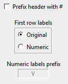
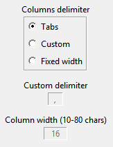
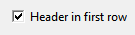
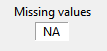

LSD Analysis of Results

This module permits users to analyze the data produced during a simulation. See the Introduction, or the window elements.
Elements of the Analysis of Results window
|
List Boxes: |
Buttons moving list elements
|
||
|
Options |
Commands
|
||
|
▲Top |
|||
Introduction
During a simulation run some of the data produced are stored in memory (the model configuration indicates which series, Variables or Parameters, have to be saved. See the section for Variables in the main Browser). This data can be accessed by by means of the Analysis of Result module, which offers the possibility to observe the data in a variety of formats. The Analysis of Result module is activated in four different cases:
- From the Browser using the data produced by the latest simulation, which are stored in memory until a new simulation run is launched;
- during a debugging session (button Analysis), when a simulation is interrupted; in this case the data are available up to the next to last simulation step, and after the analysis of (partial) result the simulation can continue;
- loading the data from a file containing simulation data previously saved. This option is alwasy offered even when a data set is available in memory as in the previous two cases.
- Loading data currently stored in the model. These series can be analysed only at the current time step, that is they are available with one value.
The window for the Analysis of Result shows the data available listed in
the Series Available list box. The series
to be elaborated must be selected and moved in the central list Series
Selected: all the commands concerning plotting, producing statistics or
save data concern only the series in this box. Users can select the options
available and then issue one of the following commands:
- graphical representations of the series. The series are plotted in graphs in different arrangements according to the options chosen (e.g. time series or cross section). The graphs are shown in individual windows which are listed in the rightmost list box Graphs, and can be brought up in the foreground by double-clicking on their title in the list;
- descriptive statistics, either taken over time or cross-section. They are printed in the Log window;
- text files, containing in the columns the series produced. A variety of formats are available for export from LSD, to be subsequently imported in an external package for further elaboration;
- postscript files containing the graphical representation produced on the windows in a format suitable for inclusion in a word processor.
The user can set a number of options for each of the above operations. Therefore, each operation is made by the following actions:
- Empty the central list box, if necessary.
- Select the series of interest in the Series Available list box, possibly after sorting the available series in a suitable order or filtering them in a particular way, and move them in the central list box Series Selected (button ">").
- Set the options of interest (e.g. automatic scaling, color or no color graphs, type of plotting, etc.)
- Issue the command (e.g. plot, statistics etc.)
- If necessary, compare with the model description (e.g. the equation for the Variable plotted) available from the menu Help
The module Analysis of Result does not interfere with the other activities of a LSD model program, so that it is possible, for example, to analyse the partial results during a simulation and then continue it. See the complete description of the elements available in the Analysis of Result window.
|
▲Top |
Series Available
List of the series available. The series are presented in the following format:
InstallBase 1_11 (30 - 200)
which contains the following information:
- the name of the Variable or Parameter (InstallBase);
- a code to distinguish between the same Variables or Parameters in different Objects of the model (1_11). This code contains as many digits as the hierarchical level of the Object containing the Variable, in the example the first highest level Object and the eleventh of the second level. The user can check in the model report, observable from the menu Help, where the Variable is placed.
- the first and last simulation time step for which the data are available (30 - 200). In the example the Object containing this Variable has been created in the 30th time step, and lasted up to 200th time step.
Sorting
series
The order of the series reflects the structure of the model, and therefore
variables saved from the same Object are listed sequentially. For large models
it may be useful to sort the series available in one of the
available formats.
Selection Methods
From this list variables must be selected to be moved in the list of the Series
Selected. using the Button '>'. The labels can
be selected using the mouse with the usual bindings:
- click on one label to select it and de-select any other;
- keep the control key pressed and click on a label to add it to the selection without de-selecting other ones.
- click on a selected label to de-select it;
- click and scroll the mouse pointer oevr the listbox to select all the labels encountered;
- click on one label, keep the shift key pressed and click on another label to select all the labels between the two;
It is possible to select a group of items with the same label, and also filtering these according to their instance code, using the right button of the mouse on one of the labels to select. See help on the batch selection on this.
Variables' equations
Clicking with the right button of the mouse while keeping the shift key pressed
the system pops up a window showing the code for the variable. Note that if the
series concern a parameter's value, this operation has no effect.
|
▲Top |
Series
Selected
This list contains the active series, to be plotted, saved, made statistics
about. These series have been moved in from the Series Available list
box and pressing the button ">".
The same selection rules as in listbox Series
Available apply. Pressing the button "<" removes
from this list all the selected labels. Pressing the button Empty
removes all the series in this box, selected or not selected, equivalent to
select all the labels in this box.
|
▲Top |
Button ">"
Insert in the listbox Series Selected the variables selected in the Series
Available.
|
▲Top |
Button
"<"
Remove the selected labels from listbox Series Selected.
|
▲Top |
Buttons
concerning Sorting
The labels shown in the Series Available list box are sorted according
to the Object that contain them, starting from the highest level Objects to the
lowest ones. When there are many series it may is useful to list all series of
the same type together, so to make easier their selection. The avaiable sorting
criteria are:
- Sort: list the series according to their increasing label alphabetical order and to their code.
- Sort (end): sort the labels according to, firstly, their increasing alphabetical label order, and, secondly, then to their "end" date, the time step when the Object containing the Variable has been removed by the model. If no Object has been removed during the simulation, this option sorts the labels identically to the previous one, Sort. But if some Object have been removed, this sorting method shows sequentially the series with the same labels placing first the series in Objects still existing.
- Un-sort: reproduce the original order of the series, with the ones contained in the highest Objects first, and then grouped according the Object containing them.
|
▲Top |
Button "Clear"
Removes all the labels from the listbox Series Selected. Equivalent to
select all labels in the listbox and pressing button "<".
|
▲Top |
Button
"Add series"
Add more data series for analysis to the ones currently available, taken from
the current model, from previously saved result files, or from elaborations of
the selected series.

By default the Analysis of Result module loads in the Series
Available listbox all the series saved during the latest simulation run
(that is the data contained in variables or parameters marked to be saved). Besides these data, the
user can load three other types of data to the Analysis of Result
module:
- Data from the current configuration of the model. These data will conventionally be marked as data at time step 0, and can be used to make cross-section graphs or statistics only, since the system can retrieve only the values of the elements at the current time step. Note that the system offers a auto-completion facility, so that the window to inser the label of the desired element is automatically filled in.
- Data loaded from file(s) of LSD results saved from a previous simulation run(s). This option loads the data from a files selected with the usual file selection method. When a file is loaded, its series will be marked by adding a "F" letter in the end of the label, and the file is assigned an increasing number, indicated in the Log window. This file number is also indicated in the first location of the tag of the series. This convention permits to differentiate from series produced during the last simulation run, from those data loaded from the file and, in case, of the different data files loaded. It is possible to also load several files, usually produced by multiple runs.
- (available only if some series is present in the Series Selected listbox) Data from creation of new series obtained as elaboration of the selected series. The system can generate a new series using the average, minimum, maximum or variance of the selected series. The user is asked to specify the label of the new variable and the tag. See here for further details.
|
▲Top |
Create Series

This option elaborates selected series creating a single new series. The
existing series can be scanned along two dimensions:
- Compute over series: the new variable will be composed by as many time steps as the selected ones. Each time step value is computed elaborating the same time step values of the selected series. For example, (choosing Average) being vtj the value of series j (with j={1, 2, ...n}) at time t the new series will be computed as: NewSeriest=SUMj[ vtj ] / n
- Compute over cases: The new series will be composed by as many time steps as the number of series selected. Each value is computed elaborating all the values for one of the series selected across all the time steps of the series. For example, (choosing Average) being vtj the value of series j at time t the new series will be computed, for the conventional time step j, as: NewSeriesj=SUMt[vtj ] / m, where m is the total number of time steps of the series
The new series can be computed as the average, maximum,
minimum, variance, standard deviation (multiplied by a factor) and simple count
of the values in the series. The user must specify a label and a tag,
the set of digits used for LSD model series used to differentiate for
series in different objects.
It is possible to filter away data during the elaboration. For example, it is
possible to let the calculation ignore all values below or above a specified
value.
|
▲Top |
Listbox "Graphs"
List of graphs already created by means of a plot command. Each graph is linked to one item in this
listbox, where they appear with the title assigned when created, an increasing
counter. Double clicking on one of the lines in the list brings the selected
graph in the foreground. Graphs created directly by gnuplot
are reported in the listbox but are re-created any time their title is
double-clicked.
Graphs may be destroyed (and removed from the list) either clicking on the item
to remove with the right button of the mouse, or selecting it and pressing the
Delete key.
|
▲Top |
"Series
= n Cases = c"
Summary information of the result file, where n is the number of series
contained in the data available from the simulation and c is the number
of cases (i.e. time steps).
|
▲Top |
"Use
All Cases"

This option tells the system to apply the commands (e.g. plotting, statistics,
export data) to all the cases available. Set off this option in order to apply
the commands to only a portion of the cases available.
|
▲Top |
"From case INIT to case
END"
These cells can be accessed only if the Use All Cases option is off.
They indicate the first and last time step to be used for the different
commands.
|
▲Top |
"Y Self-scaling"

If this option is checked on, the graph will automatically set the minimum and
maximum Y according to the data observed. Set off this option to set manually
the max and min Y values.
|
▲Top |
"Min.
Y - Max. Y "
These cells can be accessed on if Y Self-scaling is set off. It sets the
graph's minimum and maximum Y to the values indicated.
|
▲Top |
Y2
Axis

Only for time series graphs, it is possible to use a double Y axis. That is,
some of the series selected will be plotted along one scale, and other series
will be used on another one. These graphs are constrained to use the
automatically determined scaling. When this option is on, the user must select
a number indicating the first series to be plotted according to the second
scale. All the series after the indicated series will use the secondary scale.
Therefore, this number must be included between 2 and the number of series in
the listbox Series Selected.
Notice that the secondary scale is indicated among parenthesis in the Y axis (see the example graph). Pressing the Shift key, the mouse cursor over the graph indicate the position in respect of the secondary scale.
|
▲Top |
"Title"
Allows users to assign a title to the graph. The title will be used in the list
of graph and as header to the window showing it. By default, the system assigns
as title name the very first variable in the list of the ones to be plotted.
|
▲Top |
"Watch"
Checkbox that, if on, refreshes all the LSD windows during the creation of the
graph, showing the process of graph creation. If checked off, the plot is made
in background, increasing slightly the speed of producing the graph.
If checked off, users cannot access the LSD windows during the plot of graphs.
This is relevant because during the creation of a graph the user can abort the
plotting (the button for Plot is changed in Stop), if the graph
is too complex and taking too much time to be plotted.
|
▲Top |
Button "Plot"
This button creates a graph window plotting the data from
series listed in Series Selected and using the options for: Cases to Plot; Y scale; Color; Lines / Point; Point size; Grids, Time
Series / Cross Section option, Sequence / XY Plotting
option.
The graphs produced depend on the options Time Series / Cross Section and
Sequence / XY Plotting chosen, and the number of series selected, for a
total of five different types of graphs:
Time Series & Sequence 
The standard time series plotting, where X contains the time step of the
simulation and the series are plotted. The system automatically removes series
non existing during the cases considered, or truncates as necessary. Lines
connects points from the same series in different times. Note that if the
number of time steps is larger than the available definition (640 points) the
system computes one single point (the average) for each datum falling in the
same X value.
Cross Section & Sequence 
The X axis corresponds to the series, the Y axis to their value and the lines
with different colors correspond to a particular time step of the simulation.
The cases to plot, and the order in which the Variables has to appear in the X
axis, are set with a specific window. It is
possible to rank the series listed in the X axis according to increasing or
decreasing values (at a certain time step), or to use the same rank as appear
in the Series Selected listbox. A label below the X axis reports the number of
series used. The lines connect points from the different series at the same
time step.
Time Series & XY Plotting and more than one series
selected 
The X axis reports the values from the very first series in the window Series
Selected. The graph will contain a line for each subsequent series, placing
a point for each value from the first series. For example, suppose there are
three series in the Series Selected list (X1, X2,
and X3). The graph will contain two lines (or groups of points) at
the coordinates (X1t,X2t) and (X1t,X3t),
for each time step t included in the user's selection of
cases. The graph is produced by gnuplot (see here for details on how to
manage the windows produced by gnuplot).
Time Series & XY Plotting and one single series selected
This graph reports the phase diagram of a series. The X axes contain values of
the series selected, and on the Y axes are reported the values of future time.
It is possible to insert a 45° line in the graph so to indicate the stable
points (where Xt=Xt+1). The user is requested to insert a
lag value, and a single series will be produced for each lag. For example,
consider the user requesting three lags. The graph will contains two series at
the coordinates (Xt,Xt+1) and (Xt,Xt+2)
respectively.
Cross Section & XY Plotting
This graph considers data from a single time step. It uses the values from a
group of series for the X values and produces lines from group(s) of other
series.
The user is asked to specify one single time step and how many series will give
the values for the X axis. It is necessary that the number of series chosen for
the X axis is an exact divisor of the rest of the series. For example, if the Series
Selected list contains 6000 series, the user can choose 1000, 2000 or 3000
as "block length". If 2000 is chosen (and k is the time step chosen)
the system considers the values from the first 2000 series as values defining
the X axis, and two other data sets (from the 2001 to 4000, and from 4001 to
6000) that will provide the Y values to plot. The graph will therefore contain
two lines defined by the 2000 points each with coordinates {(X1k,X2001k),
(X2k,X2002k), ..., (X2000k,X4000k)}
for the first series and {(X1k,X4001k),
(X2k,X4002k), ..., (X2000k,X6000k)}
for the second.
|
▲Top |
Print
Data
This button prints in the Log window the data from the series selected. The
data are organized in columns with headers indicating the names of the
series. The data comprise the time steps indicated in the fiedls
for initial and ending cases.
|
▲Top |
Lattice
LSD permits to plot 2D lattices, where each square is colored according to
different values of a n x m series of data. The data must be defined in
positive integer values (including 0) .
The Series Selected listbox must contain all the data for the lattice at
the same time step, ranked by line. When asking for a lattice the system opens
the following window:

- Insert time step to use : insert the time step when the data must be used. By default the window reports the latest time step available for the data
- Insert number of columns : the system requires to know the length of the lines in the lattice. For example, if the number of columns is 40, then the 41st series is considered to be the first value of the second line.
- Lattice width : width of the lattice plot, expressed in screen pixels
- Lattice height : heigth of the lattice plot, expressed in screen pixels
If the option grid
is set on, the plot will draw lines separating the elements in the lattice.
Note that if the total number of series selected divided by the number of
columns does not make an integer number, then the lattice plotting is aborted.
|
▲Top |
Gnuplot
Gnuplot is a package,
distributed freely, for creating graphical representations of numerical series.
It is a very powerful and flexible tool, which is frequently installed by
default in Unix systems. For Windows is available wgnuplot, which is included in the LSD distribution. Gnuplot can be run from the operative
system or launched from its menu entry in the main Analysis of
Result window, normally to operate on a file created with the Save Data command (remember to place a # before the labels'
line).
LSD uses gnuplot automatically to create the XY graphs (see plot for further details). It is a three steps procedure:
- create a data file and a command file with the data to use and the gnuplot commands for the desired graph; these files are located in a subdirectory of the model's own directory named plotxy_n, where n is the graph number reported in the Graph listbox.
- execute gnuplot's commands resulting in graph with a format suitable to be imported in Tcl/Tk, the graphical language used by LSD.
- create a standard LSD windows for a graph importing the gnuplot generated graph.
Step 3 may be dangerous for Windows OS's. In fact, Tcl/Tk is
likely to crash when a too large graph is created (and all of your simulation
results are lost...). To avoid this a control asks users whether to skip step 3
in case the graph appears too large (> 0.5 Mb). Instead of creating the LSD
internal windows, it is possible to generate a gnuplot
graph window, which is not related to the LSD program. Such windows need to be
closed explicitly, which is done by using a small windows created together with
the main gnuplot graphs window.
gnuplot offers a wide set of
options, and LSD exploits only a small part of these. However, it is possible
to edit the options used to create XY graphs and make them appear in the LSD
windows. See here how to do this.
Users willing to create sophisticated graphs, beyond the LSD possibilities, can
save the necessary data using the Save Data command. Then,
run gnuplot (wgnuplot for Windows users) from menu Help
and exploit all the gnuplot
possibilities (see the gnuplot
extensive help typing "help" in the gnuplot
editor).
|
▲Top |
Gnuplot
options
These options concern the terminal defined in gnuplot. The system automatically
recognizes the operative system used, and set the values accordingly, although
in some cases (e.g. Mac OS) there may be different alternatives. Normally, MS
Windows users should use the "windows" terminal, while Linux and Mac
users should use "x11". However, Mac users can also use
"aqua".
The second option concern the level of detail used by gnuplot for the 3D
graphs. For details see the gnuplot help for "dgrid3d".
|
▲Top |
XY Plotting and Gnuplot (for expert users)
The XY plots are generated using the gnuplot package (wgnuplot for Windows).
Gnuplot is used in batch mode. That is, LSD prepares the files with the data
("data.gp") and with the commands for gnuplot
("gnuplot.lsd"). The resulting graph ("plot.file") is
exported in the terminal tkcanvas and then sourced in the LSD own
Tcl/Tk interpreter. The files generated for this process are kept on the disk up
to the closing of the Analysis of Result module, during which they are
removed. Users may exploit these files to run gnuplot interactively, for
example generating XYZ plots, errorbars etc. For this purpose LSD generates
also a gnuplot command file ("gnuplot.gp") that contains the same
commands for the plot without the instructions for generating a tkcanvas.
Users may customize the gnuplot graphs by acting directly on the commands to gnuplot. To do this use the following steps:
- Create a graph using the desired series with the XY Plot option on. This will store the data for the graph in the file 'data.gp' located in a directory called plotxy_N, where N is the plot number, descending from the model directory. See the Model Info in LMM to know the model directory. The file gnuplot.gp will contain the gnuplot commands.
- Close the window containing the generated plot.
- Open with an editor (e.g. LMM itself) the file gnuplot.gp.
- Edit and save the file gnuplot.gp. For example, add a line stating set nokey and save.
- Double-click on the item in Graphs corresponding on the deleted graph,
The system will generate a new gnuplot graph applying the edited commands, in the example above will use the same options but will not print the legend.
Note that the graphs exported from gnuplot to Tk tend to be pretty large. Before loading them LSD scans these files (reaching even tens of Mb's) and removes the duplications, leaving manageable files of few tens of Kb's.
|
▲Top |
Lines / Points
This option allows users to create graph with lines or points. Note that for
graphs using a large number of values the lines can be just an approximation of
the positions of the actual values.
|
▲Top |
Point
size
For graphs produced by gnuplot determines the size of points. 1 is normal size.
|
▲Top |
Color
By default the graphs created with Plot assign differen colors to each
series. Checking this options all series are plotted in black. Users can still
identify each series when no color is used by using the mouse sensitivity
features of the graph windows.
|
▲Top |
Grids
This option set on causes the graphs to be plotted with a grid dividing the
space in sections of 25% each, both on the vertical and horizontal dimension.
|
▲Top |
Selection of Cases for "Cross Section"
Analysis
When the option "Cross Section" is checked on
(but in the case of XY plots), this function allows to decide the cases, i.e.
the time steps, to consider as single series. It applies both for plots (where one line indicates a time step over all the
Variables selected) or for statistics, taken over the
Variables selected at a given time.
The window below asks users the list of cases to be considered, to be typed and
added to a list, and then the sorting.

The leftmost section of the window contains the entry where to type the cases to use. Below the entry there is the list of cases already selected.
The central part contains four buttons:
- Add: include the typed case in the list of time steps selected. It is equivalent to pressing the key Enter.
- Delete: remove from the list of time steps the elements currently highlighted
- Continue: end the insertion of cases and continue the operation of plotting, or making statistics on, the cases selected (short cut: c).
- Abort: abort the operation, returning to the main Anlysis of Result window
The rightmost section concerns the sorting of the Variables, to appear as the X axis on the cross section graph (it is ignored for the statistics command). It contains a label indicating the option currently chosen, which changes when pressing one of the three buttons:
- Sorting Ascending: the Variables will appear according to their increasing values at the time highlighted in the list of Time Steps selected when the button is pressed. That is, the Variable with the lowest value at the time indicated will appear on the left of the graph, while the Variable with the highest value at the same time step will appear on the right of the graph.
- Sorting Descending: the Variables will appear according to their decreasing values at the time highlighted in the list of Time Steps selected when the button is pressed. That is, the Variable with the highest value at the time indicated will appear on the left of the graph, while the Variable with the lowest value at the same time step will appear on the right of the graph.
- No sort: the order of the Variables will be the same used in the list of Vars. to Plot.
In case you want to insert a sequence of times, to generate many series, there are several shortcuts:
- Control-f (for from). The value indicated will be used as the first time step to insert.
- Control-t (for to). The value indicated will be used as the last time step to insert.
- Control-x . The value indicated will be used as step of the series. For example, starting from 2 and setting step 3 you will insert 2-5-8-11-14 etc, until the value indicated for final time.
- Control-z . Insert the series as defined. If no step value have been indicated it will use step 1.
|
▲Top |
Button
"Save Data"
This command exports variable values from the Series Selected window in
a text file made of as many columns as the Variables chosen and as many lines
as the cases indicated with the Cases to use option.
Two types of data files are available:
- LSD Result Files: file contains data that can be loaded in a new session of Analysis of Result in LSD
- Text Files: file contains data in a generalized format
Many options are available for the the case of text files.
Labels to use
The option "Original" leaves the same series name as in the LSD
model, attaching a progressive number to distinguish between different
instances of the same series. This options can cause problems when Variables
have long names and the packages meant to be used for the data treatment
accepts only few characters (e.g. SPSS and Statistica use only up to 8
characters for variables names). The option New Names allows users to
assign a name that replaces the original name of the variable, and the system
assigns a progressive number to distinguish between the different variables.
For example, if the new name assigned is "Col", the series will be
indicated by Col1, Col2 etc.
Users can add a '#' symbol before the first line indicating the Variable's
labels. This is the standard for files accepted by gnuplot
which ignores the columns' headers.
Columns delimiter 
Three options are available. The default is the standard Tab delimited file,
where the column are separated by the tab character (accepted by most
packages). The second option allows users to specify their own delimiter for
columns (e.g. semicolon, spaces etc.). The last option allows users to create
fixed length columns. This means that each column will contain exactly the
spaces indicated. For variables labels (first line) the possible extra spaces
are filled with spaces, while for the values are filled trailing decimal zeros.
General Options 
General Options 
Lastly, users can decide whether to have variables labels in the first row of
the file (some packages don't accept data mixed with labels). In case there are
missing data, users can specify the code for missing values.
|
▲Top |
Button
"Statistics"
This button causes LSD to compute few descriptive statistics on the variables'
values selected in Vars. To Plot listbox. Depending on the options chosen, the
statistics can be computed on all cases for each variable (Time Series)
or single cases for all variables (Cross Section). Moreover, in case of
time series statistics, the statistics are computed only on the cases set with
the option for X self scaling. The statistics appear in
the log window (from which can are copied and pasted
elsewhere). The indicators provided are:
- average;
- variance;
- minimum
- maximum
- standard deviation
The statistics are
reported on lines containing, for time series statistics, a line for each
variable and the number of cases considered:
Time series Descriptive Stats.
400
Cases
Average Var. Min Max Sigma
InstallBase 1_10 (400) 161.855
8811.14 0 251 93.9852
InstallBase 1_18 (349) 107.845
1523.25 0 131 39.0849
InstallBase 1_101 (26) 0.884615 0.102071
0 1 0.325813
The header indicates the number of cases considered in all. But, if the Variable lasted only few time steps, the statistics are computed only over the actual time steps it lasted. These are indicated in between parenthesis after the name and code of the Variable. In the example the first line concern a Variable lasting for all the 400 cases. Instead, the second and third Variable have lasted for 349 and 26 cases respectively.
For cross section statistics, each line refers to a time step and reports the statistics over the Variables considered. Again, the computation consider only the periods of existence for the Variables:
Cross Section Descriptive Stats.
3
Variables Average Var.
Min Max Sigma
Case 50 (1)
8 0 8
8 0
Case 100
(2) 60
169 47 73 18.3848
Case 370
(3) 7.667 10422.2 1
251 125.033
In the example above the statistics requested concern three Variables and three time steps, 50, 100 and 370. In between parenthesis is reported how many Variables existed in each case (1, 2 and 3).
|
▲Top |
Menu
"Exit"
Exits the Analysis of Result and return to the LSD Browser window or to the
Debugger window. All graphs are lost when the module Analysis of Results is
closed.
|
▲Top |
Option
"Time Series" or "Cross Section"
This option allows to consider plots and statistics as time series or cross section analysis. In
the Time Series case the data used are all the values in the range of cases specified by the user (automatically
excluding missing values) and the analysis consider a data set as the values
produced by one Variable across the time steps. In the Cross Section
case the user is requested to specify one or more time steps (series including
missing values at that time step are automatically excluded). In this case a
data set is given by the values of different Variables at the same time step.
For plotting graphs the results depend also on the option Sequence / XY Plot (see here). See help on plot for further details.
|
▲Top |
Option
"Sequence / XY Plots"
This option allows to consider alternatively plots of a
sequence of values or as a XY mapping. The case of Sequence consider
each data set as identical to the others. Instead, the case of XY Plots
consider one data set as to be placed on the X axis of the graph and the
other(s) to be plotted as corresponding Y's.
The actual type of graph depends also on the option Time Series / Cross
Section (see above or on help on plot
for further details).
In the following is discussed the case of XY Plots.
- In case of Time Series the X axis will be occupied by the values of the very first entry in the list of the Series Selected. and the graph will consider as separate data sets any other series. For example, suppose there are three series in the Series Selected list, X1, X2, and X3 The graph will contain two lines (or groups of points) at the coordinates (X1t,X2t) and (X1t,X3t), for each time step t included in the user's selection of cases.
- In case of Cross Section, the user will be asked to specify one single time step and how many series will give the values for the X axis. It is necessary that the number of series chosen for the X axis is an exact divisor of the rest of the series. For example, if the Series Selected list contains 6000 series, the user can choose 1000, 2000 or 3000 as "block length". If 2000 is chosen (and k is the time step chosen) the system considers the values from the first 2000 series as values defining the X axis, and two other data sets (from the 2001 to 4000, and from 4001 to 6000) that will provide the Y values to plot. The graph will therefore contain two lines defined by the 2000 points with coordinates {(X1k,X2001k), (X2k,X2002k), ..., (X2000k,X4000k)} for the first series and {(X1k,X4001k), (X2k,X4002k), ..., (X2000k,X6000k)} for the second.
Note that the XY graphs are not generated by LSD directly but are imported from gnuplot, a graphical package. Only few of the options offered by gnuplot are exploited in the LSD Analysis of Result options. See the instructions to apply different gnuplot commands to your LSD graphs.
|
▲Top |
Button
"Postscript"
This function allows to save a graph as postcript file, which is a standard
format for graphical pictures. These files can be printed (to postcript
printers) or included in documents.
Users are requested to specify which graph they want to save, by selecting one
in the Graphs list. The following options are available:
- Include graph labels: include in the file the labels for the series.
- Color or Gray: produces a color or gray shades postcript file
- Landscape or Portrai: produces a horizontal- or vertical-riented postscript file
- Dimension: allows users to define the width (in millimeters) of the picture in the postcript file
- filename: choose the file name for the picture
- Choose file: allows users to modify the name of the file and its directory
|
▲Top |
Graph Windows
The graphs produced during a Analysis of Result session are listed in
the right-most list in the main Analysis
of Results window. They are independent windows that are destroyed once the
Analysis of Result session is closed. Graph windows can be removed by
clicking with the right button of the mouse in the Graphs listbox in the
main window, or selecting it and pressing the Delete key.
The plots produced with the commands Plot are endowed with
a series of features that semplify their use and reading (some of these
features are not available for graphs produced using the XY Plot option on). Of course, windows
produced by gnuplot do not share such features.

The example above is a (time series) plot where the series have been
selected as the only Objects surviving at a given time (using the option Sort (end) ), with colors and no grids.
These windows are sensitive to the mouse passing over them: the bottom part of
the window prints the series over which the mouse is positioned (InstallBase 1_5 in the example), the X
value (Case num: 208) and the Y
value (Y value: 310.3831). This
sensitivity permits to read a graph containing very many series, even when
using the no color option.
Graphs can be improved adding new labels and modifying existing ones:
- Click and drag one of the existing label moves them around the graphs;
- Click the right button of the mouse over one label to edit its text, dimension, font and color.
- Press the Shift key and Click to create a new label;
With this option it is possible to create fancy graphs. In the following example a two-scales graphs enjoys edited labels, repositioned and recolored.

Frequently a user produces quite many graphs, and the screen becomes easily crowded of graphs. To move easibly among the graph windows the user can exploit two features:
- double-clicking on the label of one graph the listbox Graphs in main Analysis of Result control window brings that graph in the foreground.
- double-clicking on a graphs window brings the main Analysis of Result control windows in the foreground.
|
▲Top |
Menu Help
This menu offers three elements
- Analysis of Results - Help. Show this help page
- Model Report show the model report, containing model structure. See the help on the model report.
- Model Help show the model help, containing the modeler's comment on the model. See the help on the model help.
|
▲Top |
Menu Color
Users can set personal colors to use for the first 20 series (subsequent series
are plotted in black). Choosing the menu entry "Set colors" a new
window shows the colors currently used. Click on one of the colors to modify
it. Only the graphs produced after the color change are affected.
Choose "Default colors" to reset the initial colors.
|
▲Top |
Batch
Selection
When users need to select many series in the listboxes Series Available
and Series Selected it is possible to click on one label with the right
button of the mouse in order to use a general criterion to operate with a whole
set of series with that label. In the example below the mouse was clicked with
the right button of the mouse on the label HerfEval.

There are three possible criteria:
- Select all the series: select all the series with the chosen label.
- Select for series' tags: series are associated with tags containing as many numbers as the hierachy of objects containing them. In the example, the variable HerfEval is located in an object in the third hierarchical level, and therefore you need two digits to indicate the exact copy of the object containing it: one for the second layer and one for the third layer (the first layer is Root which is present with only one copy). Choosing this criterion, the user can place one value in one of the cells (only one) and the system will select all the series respecting the condition in respect of the indicated number in the tag's position indicated by the cell.
- Select for values of another series: it is possible to select the series in respect of the values that another series in the same object takes at a given time step. The user needs to indicate the label of the other series, the time step to be used, and the value to be used for comparison. The condition indicates the criterion by which to compare the value of the selecting series.
Inserting no values in the cells the system will add all the copies of the label ("numLinkA" in the example) in the Series Selected listbox. Inserting one value, the system will insert only the copies having the inserted value in the position of the cell used.
|
▲Top |
Cross-section Scatter plots
This option is activated when the user selects Cross-Section in the Time Series/Cross-section option and XY-graphs in the Sequence/XY-graph option and press the button Plot.
The graph generated will be a scatter plot built with points composed from data
in the series selected at a specific time. That is, from each series selected
the system extracts one value at the specified time. The graph can be composed
by points or line as indicated by the option on the main Analysis of Results
window. These values are re-arreanged to generated 2 or more variables: one or
two independent ones (for 2D or 3D graphs respectively), and one or more
dependent ones.
Users need to provide the number of series that must be plotted, which depend
on the number of series selected (call it M), the number of indepedent series
(say N) and whether the graph will be 2D or 3D.
The series selected are considered sequentially, according to the order used in
the Series Selected listbox. The M series used will be divided in N+1, for 2D
graphs or N+2 blocks containing an identical number of series. The first block
(for 2D) or the first two (for 3D) will be considered the values for the independent
variable(s), used for the horizontal axis or plane. The remaing series will be
the dependent ones, appearing on the vertical axis.
For example, suppose you selected 120 series. If N=2, that is, there are two
dependent series to plot, if you choose a 2D each variable in the graph will
contain 40 points. If you select a 3D graph each variable in the graph will
contain 30 points.

The user must provide the following information:
Time step: Time step of the values to extract from the series selected.
Series whose initial and final time of existence is 0 (conventional values
indicatating that the series is actually composed by a single value) will
always used that value, irrrespective of the time step indicated.
2D or 3D: generate a plot in 2 or 3 dimensions.
3D options: For 3D graphs only gnuplot offers the possibility to use
"gridded" data. Instead of considering the actual values, gnuplot
will divide the plane of the independent variables in equally spaced squares,
interpolating the values in those squares. In case of gridded data it is
possible to replace the lines or points with a colored surface.
Number of independent variables: the user must indicate how
many dependent variables must appear in the graph, generating as many
lines (or surfaces) as a function of the independent ones.
Num. of points: for control only, the system indicates the number of points
on the independent variable (or plane) can be constructed with the options
indicated.
Window type: the graph generated can be placed either into a normal LSD
graph window, or as an external window managed by gnuplot. The latter has
normally better quality and many features (e.g. it is possible to rotate 3D
graphs), but cannot be exported as with the LSD windows.
|
▲Top |
3D Time Series Graphs
This option is activated when the user selects Time Series in the Time Series/Cross-section option, XY-graphs
in the Sequence/XY-graph option, and 3
or more series appear in the Series Selected listbox. and press the button
Plot. The graph will consider the first
two series as independent variables plotted on a horizontal plane and the
subsequent series as dependent variables plotted on the vertical axis. The user
is requested to choose between a 2D graph with multiple dependent variables or
a 3D graph with one or more independent variables. The same options as for the Cross-Section 3D graphs apply.

The same options as for the Cross-Section
3D graphs apply. The additional option concern the possibility to generate
3D graphs using the time as one of the independent variables, while the first
series selected will be the other variable on the plane of the graph.
|
▲Top |
3D
Graphs options
There a many ways to customize a 3D graph, giving the flexibility offered by
gnuplot. Unfortunately, they are less than obvious, and so in this section we
present how LSD user can easily modify the most relevant aspects of a 3D
graph. The graphs appear in a window that can be closed clicking on the button Ok
in a small window telling Click to close.
LSD generates surface graphs, either with a color or a gray scale, like the one
depicted below.

Such image can be rotated by clicking with the main button of the mouse and
moving it across the image. For example, you can immediately observe the next
image.

In order to export such graphs there is not, unfortunately, a direct way. You
need to click with the mouse over the bar topping the window containing the
graph. From there choose the option to Copy to clipboard the image. Then
you can past the image in a graphical package, for exampe Paint in
Windows (menu Accessories), and save the image with your preferred format.
In order to access more sophisticated options you need to know how LSD uses
gnuplot. When a gnuplot graph needs to be produced, LSD generates a new
directory and places there several files. One file is called data.gp, containing the values used
for the graph. The other two files gnuplot.gpand
gnuplot.lsd, contain the
commands to gnuplot in order to elaborate the data. LSD generates a new graph
anytime you double click on the name of the graph using the commands contained
in gnuplot.gp. Therefore, in
order to generate a modified 3D graph you need to:
- Generate the graph with the default options.
- Close the newly generated window with the graph.
- Opening the file gnuplot.gp with any text editor (for example, with LMM), considering that the directory containing it is called plotxy_N where N is the number of graph.
- Edit the gnuplot.gp file
- Double-click on the name of the graph in the Graph listbox in the main Analysis of Result window of LSD.
Here are the options available:
- set xlabel : determines the label for the X axis. The same command works for the ylabel and zlabel.
- set dgrid3d 30,30,4 : this command determines the definition of the graph. The first two values (30,30 by default) indicate the number of segments used on the X and Y axis. The higher this number the more precise is the graph (and the heavier is the memory requirements). The third value (4 by default) indicates the approximation for the Z values. The higher the closer.
- set pm3d : draws a surface connecting the points of the series. This is set by default. Removing this line you generate a graph made only of lines or dots (as indicated in the option Lines/Points in the main Analysis of Results window. For example, using the Lines option you would obtain:

- set palette gray or set palette color : generate the surface in gray shades or colors (only if the option set pm3d is present).
- set grid : uses a grid for the plane X-Y
After all the
options have been given, there is the main command to plot the series. The
command indicates the file name from which to take the data, the columns to
use, and other options. For example, in order to plot the two series in the
example graphs the command is:
splot 'data.gp' using 1:2:3 with lines
t "z1(1)", 'data.gp' using 1:2:4 with lines t "z2(1)"
where:
- splot: is the command for a 3D graph
- 'data.gp': is the data file
- using 1:2:3 : is the command sayng that the surface must use the data in columns 1 and 2 for the independent variables, and 3 for the dependent variable.
- with lines : indicates to use lines to connect the points. Alternatievely, one can be points, or pm3d for the surface only (but, in the case, you need the option set pm3d).
- t "my tytle" : indicates the title for the series. To omit the title set t ""
For further information on gnuplot, open an interactive console of gnuplot by
choosing it in the main Analysis of Result window.
|
▲Top |